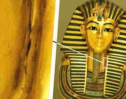
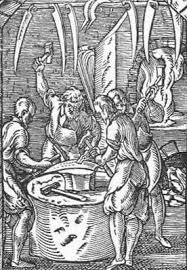
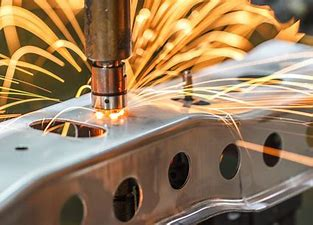
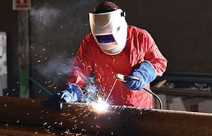

Artifacts found all around the world.
These Artifact are tinted in a fation which suggest an early form of welding.
Iron Age
Evidence suggests that Ancient Egyptians and the other places in the eastern mediterran,
learned the art of welding iron together.
Middle Ages
The rise of blacksmithing trade brought smithed welding hammers,
and the development of equipment & decoratations with the help of hammers
Indestrial Revolution
The electric arc was discovered by an English Chemist using a batery and electrodes,
the arc will form between the electrodes.
The a Russian Physicist made discover independetly how to make a continuous electric arc.
The Acetyle blowtorch was invented
Carbon electodes was first used, this was the first documented fusion welding.
1900's
Electode were introduced to the indstral populous
New welding method were created. Some of are spot welding, seam welding,
flash butt welding, projection welding.
1940's
Gas Tunsten Arc Welding was created.
Gas Metal Arc Welding was created.
Electo slag welding was developed by the soviets.
1950's
img src="images/mig.jpeg" alt="M.I.G. Welding" style="float:right; width:30.25em; height:6.25em;">Carbon dioxide gas that was contained and dirrected
at the electric arc was recorded being used.
Plasma arc welding started being used.
1960's-?
Friction welding and laser welding was developed.
Elctrogas welding was developed which is a vertical welding metod.
Please previde feedback on what you think of this website.